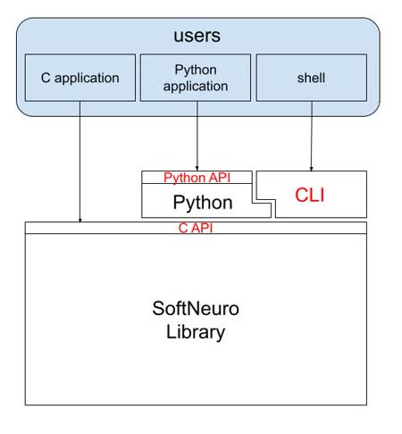

概要
本ドキュメントではSoftNeuro SDKの説明を行います。
Getting Started
まずはチュートリアルから始めましょう。 SDKのセットアップとCLIツール及びPythonでの推論実行が行えます。
構成要素と対応ドキュメント
SoftNeuro SDKはC API・Python API・CLIの三つで構成されています。

構成要素それぞれに専用ドキュメントがあります。
- CLIツールマニュアル ： コマンドライン上でSoftNeuroの各種機能を利用するCLIツールのマニュアルです。
- C API仕様書 (English) ：C言語のコードから利用できるAPIの仕様について解説しています。
- Python API仕様書 (English) : Python言語のコードから利用できるAPIの仕様について解説しています。
動作要件
SoftNeuro SDKの動作要件は以下のようになっております
| OS(アーキテクチャ) | OpenCL | CUDA | Python |
|---|---|---|---|
| Linux(x86_64) | 2.0以降 | CUDA10.2+cudnn7.6, CUDA10.2+cudnn8.2 | 3.6~3.8 |
| Linux(armv8/armv8.2) | 2.0以降 | CUDA10.0+cudnn7.3, CUDA10.2+cudnn8.0 | 3.6~3.8 |
| Windows(x86_64) | 2.0以降 | 非対応 | 3.6~3.8 |
TensorFlowインポータは、TensorFlow 2.2~2.4で動作検証を行っております。
ONNXインポータは、ONNX 1.6.0~1.8.0で動作検証を行っております。